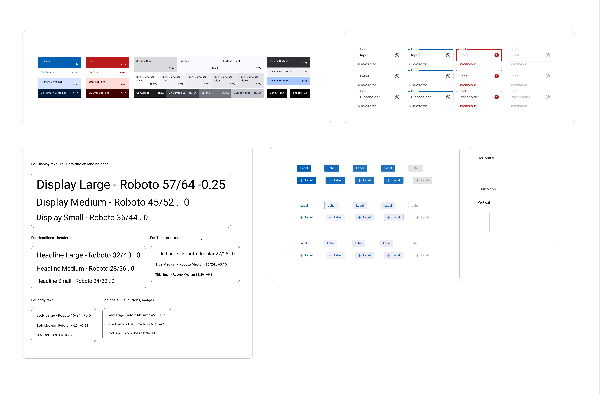

01 — Context
Two products, years of drift, no shared language
Book4Time is an enterprise SaaS platform powering spa, wellness, and hospitality operations across 100+ luxury resort properties. By the time I joined, the product had accumulated years of inconsistency across two separate products that had grown apart independently: duplicated components, divergent color values, no shared language between design and engineering.
There was no design system. There was no single source of truth. Every sprint meant rediscovering what already existed or building it again from scratch, and that was true across two codebases.
A further constraint shaped every decision: Book4Time is a white-label platform. Colors, typography, imagery, and copy are all customizable per property. A resort in the Maldives and a day spa in Toronto run the same codebase with completely different brand skins.
That meant the design system couldn't lock in any opinionated visual language. The foundation had to be brand-neutral: a structural baseline where spacing relationships, interaction patterns, and component logic are defined, but every visual expression is a configurable variable.
"The hardest decision was what 'unification' meant across two products that had grown apart for years. I had to answer that before I designed anything."
02 — Problem
Inconsistency at scale creates compounding costs
A component audit across both products revealed dozens of button variants with no documented rationale. Color values were hardcoded. Spacing was arbitrary. The same component had been rebuilt differently in each product, sometimes with different names and sometimes with different behaviour. Developers were building to inconsistent specs, and QA was catching design bugs that should never have shipped.
Finding the inconsistencies was the easy part of the audit. The hard part was deciding what unification meant across two products with different histories. Full unification up front would slow adoption on both teams, but supporting parallel patterns defeated the purpose. That decision had to be made before a single component was designed.
Component fragmentation
Dozens of button variants, inconsistent form patterns, and one-off components with no documentation or usage guidance.
No token architecture
Color, spacing, and typography values were hardcoded, so theming or updating at scale meant touching every component.
Design–dev disconnect
No handoff standards, no shared component library. Every sprint meant re-translating design intent from scratch.
No governance
No process for how components got created, reviewed, or deprecated. The system, such as it was, lived only as tribal knowledge.
03 — Approach
Token-first, then components, then governance
I structured the build in three deliberate phases. Starting with tokens was required by the platform's architecture. With 100+ properties each needing independent brand expression, semantic tokens (color.action, color.surface, typography.heading) had to be the interface between the system and each property's brand skin. No hardcoded values anywhere in the component library. Without that layer in place first, every component would have needed a rework the moment a client needed custom theming.
Design tokens
Established a three-tier architecture: primitive values (raw colors, sizes) → semantic aliases (color.action, color.surface) → component-level tokens. This gave every value a traceable source and made theming possible without touching component code.
Component library
Built on the token layer, prioritising highest-reuse components first: buttons, forms, cards, modals, navigation. Each component shipped with usage guidelines, anatomy breakdowns, do/don't patterns, and accessibility annotations.
Governance model
A contribution process, review workflow with engineering, deprecation checklist, and monthly design system office hours. The goal was a system the whole team could maintain, not just me.
The screens and components shown throughout this case study reflect the system's structural baseline, with intentionally placeholder styling. Colors, typography, imagery, and copy are all configurable per client: every property (resort, spa, hotel) applies its own brand on top of the same foundation. What you're seeing is the skeleton of the system, not any one property's finished product.


04 — Signature component
The service card: progressive disclosure at the core of the booking flow
The most complex and high-impact component was the service card, the primary interface for browsing, selecting, and configuring spa treatments. It needed to handle multi-select add-ons, technician preferences, time slot selection, and multi-date cart grouping in a single, coherent component.
The design challenge was layering this complexity without overwhelming guests. The solution was progressive disclosure: a collapsed default state showing only the essentials (service name, duration, price), and an expanded state that opens the full configuration without leaving the browsing context.

05 — Governance
A system without governance is just documentation no one reads
Building the components is the easier half of a 0-to-1 design system. Keeping it alive after launch is harder. I designed a contribution model that made it easy for product designers to propose and contribute without fragmenting the library.
I learned that the hard way. Three months into the build, I found that engineering had been implementing hardcoded color values in a parallel sprint, before the semantic token layer was finalised. Walking it back took more trust-building than design work, and it showed me that governance couldn't wait for the library to ship. A contribution process needed to exist before teams started contributing without one.
The model included: a component request template with a clear acceptance criteria checklist, a joint design-engineering review process, a deprecation workflow, and monthly office hours for design system questions. Component adoption was tracked across feature teams so we could see where the system was working and where it wasn't.
"Anyone can build a component library. The hard work is making it a living system the team can maintain without you."
06 — Outcomes
The first feature built on the system went through handoff without a reconciliation sync
The system went from nothing to a production-ready library used across product squads, with a semantic token layer that lets any of the 100+ properties apply their own brand (colors, typography, imagery) without touching a single component.
- First design system shipped for the platform: tokens, components, and documentation in production
- First feature built on the system went through handoff without a single reconciliation sync, a concrete sign that the shared language was working
- New feature design time reduced: teams assembled screens from existing components rather than starting from scratch each sprint
- Design-to-dev handoff friction reduced: shared component specs and interaction states replaced per-sprint renegotiation
- Contribution model adopted by the full design team, enabling system growth without routing every request through one designer
- Token architecture ready for zero-configuration theming across future white-label enterprise properties on the platform
07 — Next steps
Where the system goes from here
The foundation is in place: tokens, components, and governance. The next phase is deepening engineering integration: embedding a dedicated front-end engineer into the design system team so the token architecture and theming implementation evolve together rather than in separate sprints. The current handoff model works, but a tighter loop would let us ship breaking changes with more confidence and expand the token layer into motion and elevation.
Governance also needs to mature. The contribution model covers the most common cases, but the deprecation workflow is still largely manual. The next step is automating component adoption tracking across feature teams, showing which components are being used, where divergence is creeping in, and which specs are going stale before they become inconsistency debt.
The area I'm most interested in exploring is using AI tooling to accelerate the documentation layer. Component audits, usage guidelines, naming convention reviews, and edge-case specs are slow to produce manually. AI can draft that scaffolding in a fraction of the time, freeing up design capacity for the judgment calls that actually require it. On a system serving 100+ properties, keeping documentation current is a real operational challenge. That's where I see the biggest leverage.